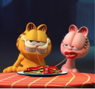
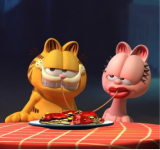

Garfield fora de casa
Lançado em 1º de maio de 2024,Garfield fora de casa, traz uma abordagem divertida e inovadora da famosa história do gato preguiçoso e amante de lasanha. Desta vez, Garfield é dublado por Chris Pratt e vive uma nova aventura quando descobre que tem um pai chamado Vic, interpretado por Samuel L. Jackson. Vic é um gato com uma personalidade ousada e atitude de "gato de rua", que contrasta com o estilo de vida tranquilo e egoísta de Garfield.
A trama acompanha Garfield enquanto ele se vê em uma jornada inesperada ao lado de seu pai, que ele acabou de conhecer. Com isso, Garfield sai de sua zona de conforto, onde seu foco principal era dormir e comer, e embarca em uma experiência ao ar livre que o desafia e o faz repensar seu estilo de vida. Além disso, o filme conta com um elenco de apoio notável, incluindo Harvey Guillén como a voz de Odie, o cachorro fiel e leal que se junta à aventura, e Nicholas Hoult como Jon Arbuckle, o dono de Garfield, que mostra sua devoção ao gato travesso.
Combinando comédia e uma nova dimensão emocional, a animação expande o mundo de Garfield para incluir novos personagens e um enredo envolvente sobre família e amizade. A aventura de Garfield em "Fora de Casa" mistura humor e ação, levando-o a uma série de situações inusitadas enquanto ele descobre mais sobre si mesmo e seu lugar no mundo ao lado de seu novo amigo Odie e seu recém-descoberto pa.
Garfield e seu Grande parceiro Odie

Odie, o fiel cachorro de Garfield, ganha destaque como um personagem essencial para o desenrolar da história. Dublado por Harvey Guillén, Odie mantém sua personalidade clássica: alegre, leal e sempre ao lado de Garfield, mesmo quando é alvo das travessuras do gato. A narrativa aproveita as características levemente ingênuas e afetuosas de Odie, que, embora não fale, se expressa com expressões e latidos, trazendo humor e empatia ao enredo.
Nesta nova aventura, Odie acompanha Garfield em uma jornada que os leva para fora de seu ambiente doméstico, onde eles encontram Vic, o pai distante de Garfield. Esse encontro aprofunda o vínculo entre Odie e Garfield, já que o cachorro está ao lado de seu amigo felino em uma aventura repleta de desafios e situações cômicas. Odie traz um contraponto ao sarcasmo e à preguiça de Garfield, oferecendo lealdade inabalável e entusiasmo que ajudam a equilibrar as personalidades contrastantes dos dois personagens


 
